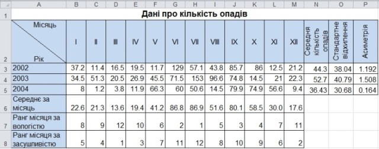

Практична робота 7.1
За таблицею з відомостями про кількість опадів, яку складали кожного місяця протягом трьох років (рис. 7.15), потрібно визначити та проаналізувати показники центру та варіації розподілу опадів за роками і місяцями.
Хід виконання
- Відкрийте файл Практ_7_1.xlsx, де міститься таблиця з даними про кількість опадів (див. рис. 7.15).

Рис. 7.15. Таблиця з вихідними даними - Для знаходження середньої кількості опадів за кожний місяць у клітинку В6 уведіть формулу обчислення середнього значення за діапазоном ВЗ:В5. Скопіюйте формулу у клітинки діапазону С6:М6.
- Для знаходження рангів місяців за вологістю у клітинку В7 уведіть формулу для обчислення рангу клітинки В6 у діапазоні В6:М6 за спаданням кількості опадів. Скопіюйте формулу у клітинки діапазону С7:М7. Зверніть увагу, що посилання на діапазон має бути абсолютним, а порядок ранжування (за спаданням) визначає третій аргумент функції RANK (див. вправу 7.2).
- Аналогічним чином у клітинках В8:М8 обчисліть ранг місяців за засушливістю, тобто за зростанням кількості опадів.
- У клітинках N4:Р5 обчисліть середньомісячну кількість опадів для кожного з трьох (2002-2004) років, стандартне відхилення та асиметрію вибірки щомісячних опадів для кожного року (усі ці функції використовувалися у вправі 7.1). Формули потрібно вводити тільки у клітинки NЗ:РЗ, а в діапазон N4:Р5 їх можна скопіювати.
- За результатами аналізу самостійно зробіть такі висновки:
- Які місяці є найбільш та найменш засушливими?
- Чи можна вважати розподіл кількості опадів за місяцями рівномірним? Який показник дозволяє дати відповідь на це питання?
- Які місяці – найбільш чи найменш засушливі – є рідкіснішими у цій вибірці?